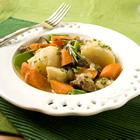

Menus Offered by Continental Cuisine…
Here are a few dishes from Chef Lou's vast repertoire of recipes. All dishes can be customized to suit your dietary preferences;
you may also submit your favorite recipes.
The recipe selections shown will change on a monthly basis,
so come back again to see if you would like to try something new!
- Featured Dish
- Appetizers
- Soups
- Main Entrees & Sides
- Desserts
Irish Stew
Chunky pieces of parsnip for a little sweetness and fresh rosemary gives this St. Paddy’s favorite a distinct flavor and aroma. Fantastic on a cold, blustery day— served with a pint of Guiness, of course!
Double Tomato Bruchetta, Crab Meat Roll-ups, Asian Salmon Cakes, Broccoli Ham Ring, Chicken Quesadillas, Ham & Basil Pinwheels, Spicy Bean Salsa, Spinach Spirals


Irish Stew, Italian Tortellini, Salmon Chowder, Fagioli ,Garbanzo, Minestrone, Roasted Pepper & Tomato, Split Pea


Shrimp w/ Asparagus, Shrimp Scampi Bake, Adobo Chicken, Creamy Cilantro Chicken, Corn Beef & Cabbage, African Curry, Beef Tenderloin w/ Roasted Shallots, Tofu w/Pork & Cashews
Apple Crisp, Southern Peach Cobbler, Blueberry Grunt, Creme Bruleé, Raspberry White Chocolate Mousse, Tiramisu, Mango Shortbread Bars, Strawberry & Cream
Bread Pudding